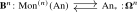
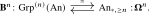
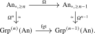
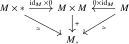
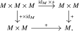
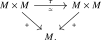

For completeness, we record a finite-stage version of the recognition principle. It is not needed for Theorem 5.4.6, but it explains how increasing coherence of the multiplication corresponds to the ability to deloop more often.
As an immediate corollary of the recognition principle for loop spaces we obtain a recognition principle for \(n\)-fold loop spaces.
Definition 5.6.1. Let \(C\) be an \(\infty \)-category with finite products. For \(n \geq 0\) we iteratively define the \(\infty \)-category of \(n\)-fold monoids in \(C\):
- For \(n = 0\) we define \(\Mon ^{(0)}(C) := C_*\);
- For \(n \geq 1\) we define \(\Mon ^{(n)}(C) := \Mon (\Mon ^{(n-1)}(C))\).
We similarly define the \(\infty \)-category of \(n\)-fold groups in \(C\) by \(\Grp ^{(0)}(C) = C_*\) and \(\Grp ^{(n)}(C) := \Grp (\Grp ^{(n-1)}(C))\).
Remark 5.6.2. For \(n = 1\) note that we get \(\Mon ^{(1)}(C) \iso \Mon (C)\) and \(\Grp ^{(1)}(C) \iso \Grp (C)\) by Remark 5.3.21.
Remark 5.6.3. The \(n\)-fold monoids defined above are usually called \(\Ee _n\)-monoids in the literature. Indeed, if \(C\) is equipped with its cartesian symmetric monoidal structure, then \(\Mon ^{(n)}(C)\) can be described as the \(\infty \)-category of algebras over the little \(n\)-cubes \(\infty \)-operad \(\Ee _n\); see [Lurie (2017), Theorem 5.1.2.2 and Proposition 2.4.2.5]. We will not use this description here.
For general \(n\), an \(n\)-fold monoid has \(n\) different multiplication operations that all commute with each other. In light of the Eckmann–Hilton argument these operations are all identified in the homotopy category \(\Ho (C)\) and are homotopy commutative for \(n \geq 2\). We should think of higher \(n\) as ‘more commutativity’.
Proposition 5.6.4 (Recognition principle for iterated loop spaces). For every \(n \geq 0\) there is an adjunction

which restricts to an equivalence

Proof. Consider the adjunction \(\bB \colon \Mon (\An ) \rightleftarrows \An _*\noloc \bOmega \). Since both functors preserve finite products (see Lemma 5.1.16), we may apply the monoid construction repeatedly and paste the resulting adjunctions. Using the equivalences \(\Mon (C_*) \simeq \Mon (C)\) from Remark 5.3.21 at the intermediate stages gives the displayed adjunction \(\bB ^n \dashv \bOmega ^n\).
The recognition principle for loop spaces, Theorem 5.2.1, says that at each stage this adjunction restricts to an equivalence between group objects and connected pointed objects. Iterating raises connectivity by one at every stage, and therefore identifies \(\Grp ^{(n)}(\An )\) with \(\An _{*,\geq n}\). □
Corollary 5.6.5. The \(\infty \)-category \(\Sp _{\geq 0}\) is equivalent to the limit of the following diagram of \(\infty \)-categories: \[ \dots \to \Grp ^{(n)}(\An ) \to \dots \to \Grp ^{(2)}(\An ) \to \Grp (\An ) \to \An _*. \qednow \]
Proof. By definition, \(\Sp _{\geq 0}\) is the full subcategory of \(\Sp \) spanned by those spectra \((X_n)\) such that the pointed anima \(X_n\) is \((n-1)\)-connected for all \(n \geq 1\), hence is given by the limit of the following diagram of \(\infty \)-categories: \[ \cdots \xrightarrow {\Omega } \An _{*,\geq n} \xrightarrow {\Omega } \dots \xrightarrow {\Omega } \An _{*,\geq 2} \xrightarrow {\Omega } \An _{*,\geq 1} \xrightarrow {\Omega } \An _*. \] The claim thus follows from the fact that these two diagrams are equivalent to each other, in light of the following commutative squares:

□
Proposition 5.6.6 (Free monoids in animae). The forgetful functor \(\Mon (\An )\to \An \) admits a left adjoint \[ F^{\Mon }(-)\colon \An \longrightarrow \Mon (\An ). \] For every anima \(X\), the underlying anima of the free monoid \(F^{\Mon }(X)\) is naturally isomorphic to the anima of finite words in \(X\): \[ F^{\Mon }(X)_1\cong \bigsqcup _{n\geq 0}X^n. \] Under this isomorphism, the unit is the empty word and multiplication is concatenation of words.
A proof is given in the supplementary material.
Exercises
Exercise 5.1. Let \(C\) be a classical 1-category. Show that the category \(\Mon (C)\) is equivalent to the usual category of monoids in \(C\):
- (1)
-
Given \(X \in \Mon (C)\), show that the maps \(e\colon * \to X_1\) and \(m\colon X_1 \times X_1 \to X_1\) do indeed give \(X_1\) the structure of a monoid;
- (2)
-
Given a monoid \(M\) in \(C\), show that we obtain an object \(X \in \Mon (C)\) by setting \(X_n := M^n\), and by defining for \(\phi \colon [m] \to [n]\) in \(\simp \) the map \(\phi ^*\colon M^n \to M^m\) by \[ \phi ^*(x_1, \dots , x_n) := (y_1, \dots , y_m), \qquad y_i := \prod _{\phi (i-1) < j \leq \phi (i)} x_j. \]
- (3)
-
Show that these two constructions define the desired equivalence of categories.
Exercise 5.2. Show that the inclusion functor \[ \Grp (\An ) \hookrightarrow \Mon (\An ) \] admits a left adjoint \[ (-)^{\mathrm {grp}}\colon \Mon (\An ) \to \Grp (\An ) \] which on objects is given by \(M \mapsto \bOmega \bB M\). (This is called the group completion functor.)
Exercise 5.3. Show that the forgetful functor \(\Grp (\An ) \to \An _*\) admits a left adjoint \[ F^{\Grp }(-)\colon \An _* \to \Grp (\An ) \] which is given on objects by \(X \mapsto \bOmega \Sigma X\). (This is called the free group functor.)
Exercise 5.4 (Words and group completion). Let \(X\) be an anima.
- (1)
-
Show that \(\pi _0(F^{\Mon }(X))\) is the ordinary free monoid on the set \(\pi _0(X)\).
- (2)
-
Using only the relevant universal properties and the preceding exercises, construct canonical isomorphisms \[ F^{\Mon }(X)^{\mathrm {grp}} \cong F^{\Grp }(X_+) \cong \bOmega \Sigma (X_+), \] where \(X_+\) denotes \(X\) with a disjoint basepoint.
Exercise 5.5. Let \(x\) be an object of an \(\infty \)-category \(C\). Denote by \(\Aut _C(x)\) the subanima of \(\End _C(x) := \Hom _C(x,x)\) spanned by the invertible endomorphisms \(x \to x\). Show that composition of morphisms in \(C\) can be enhanced to a group structure on \(\Aut _C(x)\).
Remark. One can also show that \(\End _C(x)\) itself has the structure of a monoid via composition of morphisms, but this requires some theory we haven’t introduced.
Exercise 5.6. Assume that \(C\) is a classical 1-category with finite products.
- (1)
-
Show that the category \(\CMon (C)\) is equivalent to the category of commutative monoids in \(C\) defined in the usual way: an object \(M\) of \(C\) equipped with maps \(+\colon M \times M \to M\) and \(0\colon * \to M\) such that the following three diagrams commute:



- (2)
-
Combining part (1) with Chapterexercise 5.1, deduce that in this case the forgetful functor \(U\colon \CMon (C) \hookrightarrow \Mon (C)\) is fully faithful.
Exercise 5.7 (Group completion of the natural numbers). Regard \(\N \) as a discrete commutative monoid in animae. Show that its classifying anima \(\bB \N \) is equivalent to \(S^1\), and deduce that the group-completion map identifies with the usual inclusion \[ \N \longrightarrow \Z . \] More generally, compute the group completion of the free commutative monoid \(\N ^r\).
Exercise 5.8 (The connective-spectrum dictionary). Let \(A\) be an abelian group, regarded as a discrete commutative group in animae. Show that the \(n\)-th anima of the associated Eilenberg–MacLane spectrum \(HA\) is a delooping \(K(A,n)\). Deduce that \(\Omega K(A,n+1)\cong K(A,n)\) and that \(HA\) has no nonzero homotopy groups outside degree \(0\).
Generated from the authoritative LaTeX source.